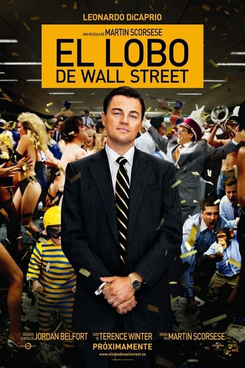

El lobo de Wall Street (2013)
Sinopsis Rápida
Del anonimato a la riqueza desmesurada, la historia de Jordan Belfort es una montaña rusa de excesos, ambición desmedida y la caída estrepitosa de un lobo de Wall Street.
Sinopsis Detallada
Basada en la autobiografía de Jordan Belfort, la película sigue el ascenso meteórico y la posterior caída de este corredor de bolsa que construyó un imperio de estafas financieras. Dirigida por Martin Scorsese, la cinta es una sátira oscura y frenética sobre la codicia, el hedonismo y la corrupción en el mundo de las finanzas. Con un reparto estelar encabezado por Leonardo DiCaprio, la película no escatima en detalles sobre las fiestas descontroladas, el abuso de sustancias y las consecuencias devastadoras del ansia de riqueza ilimitada. Se explora la moralidad ambigua del protagonista y la superficialidad del mundo en el que se mueve.
¿Por qué tenés que verla?
- Una experiencia cinematográfica electrizante que te dejará sin aliento.
- La magistral dirección de Martin Scorsese y la actuación impecable de Leonardo DiCaprio.
- Su retrato crudo y sin tapujos del mundo de las finanzas y sus consecuencias ha tenido un impacto cultural duradero.
- La película presenta un estudio profundo de la ambición y sus consecuencias.
Idea Extra
Análisis comparativo entre la vida real de Jordan Belfort y su representación cinematográfica.
{{CONTENIDO_RELACIONADO}}